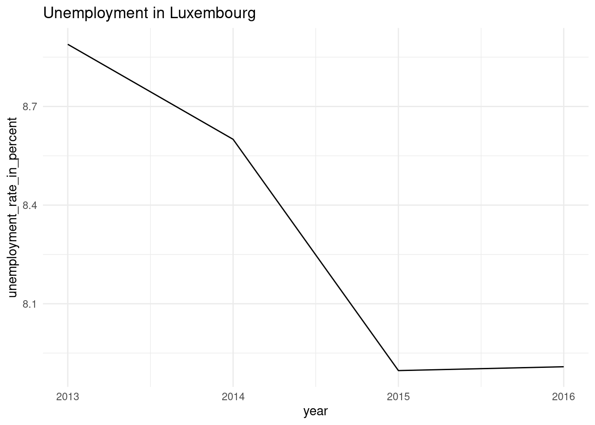
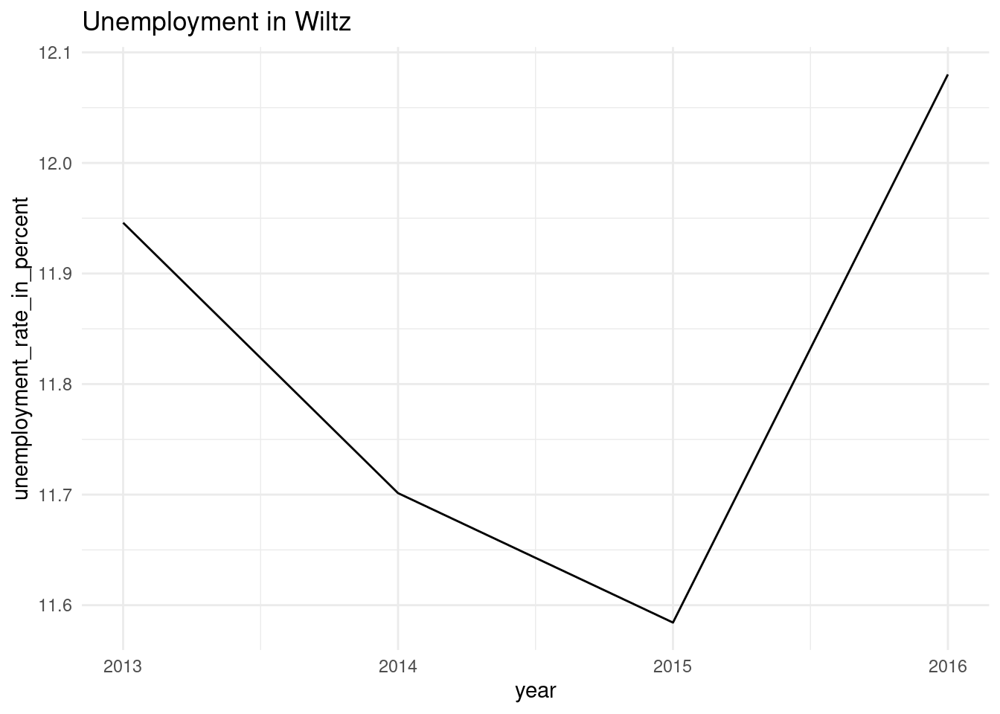

ls()4 Functional programming
This chapter will teach you the fundamentals of functional programming. Functional programming might sound scary, but we will focus on only a handful of concepts that are quite accessible while providing many benefits. Using these functional programming concepts will make your code more reliable, easier to test, document, share, and ultimately rerun.
4.1 Introduction
You are very likely already familiar with some aspects of functional program. Let’s start by discussing the two central elements of functional programming: functions and lists.
There are several ways that you can structure a program, called programming paradigms. Functional programming is a paradigm that relies exclusively on the evaluation of functions to achieve the desired end result. If you have already written your own functions in the past, what follows will not be very new. But in order to write a good functional program, the functions that you write and evaluate have to have certain properties. Before discussing these properties, let’s start by with state.
4.1.1 The state of your program
Let’s suppose that you start a fresh R session, and immediately run this next line:
If you did not modify any of R’s configuration files that get automatically loaded on startup, you should see the following:
character(0)Let’s suppose that now you load some data:
data(mtcars)and define a variable a:
a <- 1Running ls() now shows the following:
[1] "a" "mtcars"You have just altered the state of your program. You can think of the state as a box that holds everything that gets defined by the user and is accessible at any time. Let’s now define a simple function that prints a sentence:
f <- function(name){
print(paste0(name, " likes lasagna"))
}
f("Bruno")and here’s the output:
[1] "Bruno likes lasagna"Let’s run ls() again:
[1] "a" "f" "mtcars"Function f() is now listed there as well. This function has two nice properties:
- For a given input, it always returns exactly the same output. So
f("Bruno")will always return “Bruno likes lasagna”. - This function does not change the state of your program, by adding new objects every time it’s run.
4.1.2 Predictable functions
Let’s now define another function called g(), that does not have the same properties as f(). First, let’s define a function that does not always return the same output given a particular input:
g <- function(name){
food <- sample(c("lasagna", "cassoulet", "feijoada"), 1)
print(paste0(name, " likes ", food))
}For the same input, “Bruno”, this function now produces (potentially) a different output:
g("Bruno")
[1] "Bruno likes lasagna"g("Bruno")
[1] "Bruno likes feijoada"And now let’s consider function h() that modifies the state of the program:
h <- function(name){
food <- sample(c("lasagna", "cassoulet", "feijoada"), 1)
if(exists("food_list")){
food_list <<- append(food_list, food)
} else {
food_list <<- append(list(), food)
}
print(paste0(name, " likes ", food))
}This function uses the <<- operator. This operator saves definitions that are made inside the body of functions in the global environment. Before calling this function, run ls() again. You should see the same objects as before, plus the new functions we’ve defined:
[1] "a" "f" "g" "h" "mtcars" Let’s now run h() once:
h("Bruno")
[1] "Bruno likes feijoada"And now ls() again:
[1] "a" "f" "food_list" "g" "h" "mtcars" Running h() did two things: it printed the message, but also created a variable called “food_list” in the global environment with the following contents:
food_list[[1]]
[1] "feijoada"Let’s run h() again:
h("Bruno")
[1] "Bruno likes cassoulet"and let’s check the contents of “food_list”:
food_list[[1]]
[1] "feijoada"
[[2]]
[1] "cassoulet"If you keep running h(), this list will continue growing. Let me just say that I hesitated showing you this; this is because if you didn’t know <<-, you might find the example above useful. But while useful, it is quite dangerous as well. Generally, we want to avoid using functions that change the state as much as possible because these function are unpredictable, especially if randomness is involved. It is much safer to define h() like this instead:
h <- function(name, food_list = list()){
food <- sample(c("lasagna", "cassoulet", "feijoada"), 1)
food_list <- append(food_list, food)
print(paste0(name, " likes ", food))
food_list
}The difference now is that we made food_list the second argument of the function. Also, we defined it as being optional by writing:
food_list = list()This means that if we omit this argument, the empty list will get used by default. This avoids the users having to manually specify it.
We can call it like this:
food_list <- h("Bruno", food_list) # since food_list is already defined, we don't need to start with an empty list[1] "Bruno likes feijoada"We save the output back to food_list. Let’s now check its contents:
food_list[[1]]
[1] "feijoada"
[[2]]
[1] "cassoulet"
[[3]]
[1] "feijoada"The only thing that we need now to deal with is the fact that the food gets chosen randomly. I’m going to show you the simple way of dealing with this, but later in this chapter we are going to use the {withr} package for situations like this. Let’s redefine h() one last time:
h <- function(name, food_list = list(), seed = 123){
# We set the seed, making sure that we get the same selection of food for a given seed
set.seed(seed)
food <- sample(c("lasagna", "cassoulet", "feijoada"), 1)
# We now need to unset the seed, because if we don't, guess what, the seed will stay set for the whole session!
set.seed(NULL)
food_list <- append(food_list, food)
print(paste0(name, " likes ", food))
food_list
}Let’s now call h() several times with its default arguments:
h("Bruno")[1] "Bruno likes feijoada"
[[1]]
[1] "feijoada"h("Bruno")[1] "Bruno likes feijoada"
[[1]]
[1] "feijoada"h("Bruno")[1] "Bruno likes feijoada"
[[1]]
[1] "feijoada"As you can see, every time this function runs, it now produces the same result. Users can change the seed to have this function produce, consistently, another result.
4.1.3 Referentially transparent and pure functions
A referentially transparent function is a function that does not use any variable that is not also one of its inputs. For example, the following function:
bad <- function(x){
x + y
}is not referentially transparent, because y is not one of the functions inputs. What happens if you run bad() is that bad() needs to look for y. Because y is not one of its inputs, bad() then looks for it in the global environment. If y is defined there, it then gets used. Defining and using such functions must be avoided at all costs, because these functions are unpredictable. For example:
y <- 10
bad <- function(x){
x + y
}
bad(5)This will return 15. But if y <- 45 then bad(5) would this time around return 50. It is much safer, and easier to make y an explicit input of the function instead of having to keep track of y’s value:
good <- function(x, y){
x + y
}good() is a referentially transparent function; it is much safer than bad(). good() is also a pure function, because it’s a function that does not interact in any way with the global environment. It does not write anything to the global environment, nor requires anything from the global environment. Function h() from the previous section was not pure, because it created an object and wrote it to the global environment (the food_list object). Turns out that pure functions are thus necesarrily referentially transparent.
So the first lesson in your functional programming journey that you have to remember is to only use pure functions.
4.2 Writing good functions
4.2.1 Functions are first class objects
In a functional programming language, functions are first class objects. Contrary to what the name implies, this means that functions, especially the ones you define yourself, are nothing special. A function is an object like any other, and can thus be manipulated as such. Think of anything that you can do with any object in R, and you can do the same thing with a function. For example, let’s consider the +() function. It takes two numeric objects and retuns their sum:
1 + 5.3[1] 6.3# or alternatively: `+`(1, 5.3)You can replace the numbers by functions that return numbers:
sqrt(1) + log(5.3)[1] 2.667707It’s also possible to define a function that explicitely takes another function as an input:
h <- function(number, f){
f(number)
}You can call then use h() as a wrapper for f():
h(4, sqrt)[1] 2h(10, log10)[1] 1Because h() takes another function as an argument, h() is called a higher-order function.
If you don’t know how many arguments f(), the function you’re wrapping, has, you can use the ...:
h <- function(number, f, ...){
f(number, ...)
}... are simply a placeholder for any potential additional argument that f() might have:
h(c(1, 2, NA, 3), mean, na.rm = TRUE)[1] 2h(c(1, 2, NA, 3), mean, na.rm = FALSE)[1] NAna.rm is an argument of mean(). As the developer of h(), I don’t necessarily know what f() might be, or maybe I know f() and know all its arguments, but don’t want to have to rewrite them all to make them arguments of h(), so I can use ... instead. The following is also possible:
w <- function(...){
paste0("First argument: ", ..1, ", second argument: ", ..2, ", last argument: ", ..3)
}
w(1, 2, 3)[1] "First argument: 1, second argument: 2, last argument: 3"If you want to learn more about ..., type ?dots in an R console.
Because functions are nothing special, you can also write functions that return functions. As an illustration, we’ll be writing a function that converts warnings to errors. This can be quite useful if you want your functions to fail early, which often makes debuging easier. For example, try running this:
sqrt(-5)Warning in sqrt(-5): NaNs produced[1] NaNThis only raises a warning and returns NaN (Not a Number). This can be quite dangerous, especially when working non-interactively, which is what we will be doing a lot later on. It is much better if a pipeline fails early due to an error, than dragging an NaN value. This also happens with log():
sqrt(-10)Warning in sqrt(-10): NaNs produced[1] NaNSo it could be useful to redefine this functions to raise an error instead, for example like this:
strict_sqrt <- function(x){
if(x <= 0) stop("x is negative")
sqrt(x)
}This function now throws an error for negative x:
strict_sqrt(-10)Error in strict_sqrt(-10) : x is negativeHowever, it can be quite tedious to redefine every function that we need in our pipeline. This is where a function factory is useful. We can define a function that takes a function as an argument, converts any warning thrown by that function into an error, and returns the new function. For example it could look like this:
strictly <- function(f){
function(...){
tryCatch({
f(...)
},
warning = function(warning)stop("Can't do that chief"))
}
}This function makes use of tryCatch() which catches warnings raised by an expression (in this example the expression is f(...)) and then raises an error insead with the stop() function. It is now possible to define new functions like this:
s_sqrt <- strictly(sqrt)s_sqrt(-4)Error in value[[3L]](cond) : Can't do that chiefs_log <- strictly(log)s_log(-4)Error in value[[3L]](cond) : Can't do that chiefFunctions that return functions are called functions factories and they’re incredibly useful. I use this so much that I’ve written a package, available on CRAN, called {chronicler}, that does this:
s_sqrt <- chronicler::record(sqrt)result <- s_sqrt(-4)
resultNOK! Value computed unsuccessfully:
---------------
Nothing
---------------
This is an object of type `chronicle`.
Retrieve the value of this object with pick(.c, "value").
To read the log of this object, call read_log(.c).Because the expression above resulted in an error, Nothing is returned. Nothing is a special value defined in the {maybe} package (check it out, very interesting package!). We can then even read the log to see what went wrong:
chronicler::read_log(result)[1] "Complete log:"
[2] "NOK! sqrt() ran unsuccessfully with following exception: NaNs produced at 2023-02-05 17:26:52"
[3] "Total running time: 0.00103640556335449 secs" The {purrr} package also comes with function factories that you might find useful ({possibly}, {safely} and {quietly}).
4.2.2 Optional arguments
It is possible to make function arguments optional, by using NULL. For example:
g <- function(x, y = NULL){
if(is.null(y)){
print("optional argument y is NULL")
x
} else {
if(y == 5) print("y is present"); x+y
}
}Calling g(10) prints the message “Optional argument y is NULL”, and returns 10. Calling g(10, 5) however, prints “y is present” and returns 15. It is also possible to use missing():
g <- function(x, y){
if(missing(y)){
print("optional argument y is missing")
x
} else {
if(y == 5) print("y is present"); x+y
}
}I however prefer the first approach, because it is clearer which arguments are optional, which is not the case with the second approach, where you need to read the body of the function.
4.2.3 Safe functions
It is important that your functions are safe and predictable. You should avoid writing functions that behave like nchar(), a base R function. Let’s see why this function is not safe:
nchar("10000000")[1] 8It returns the expected result of 8. But what if I remove the quotes?
nchar(10000000)[1] 5What is going on here? I’ll give you a hint: simply type 10000000 in the console:
10000000[1] 1e+0710000000 gets represented as 1e+07 by R. This number in scientific notation gets then converted into the character “1e+07” by nchar(), and this conversion happens silently. nchar() then counts the number of characters, and correctly returns 5. The problem is that it doesn’t make sense to provide a number to a function that expects a character. This function should have returned an error message, or at the very least raised a warning that the number got converted into a character. Here is how you could rewrite nchar() to make it safer:
nchar2 <- function(x, result = 0){
if(!isTRUE(is.character(x))){
stop(paste0("x should be of type 'character', but is of type '",
typeof(x), "' instead."))
} else if(x == ""){
result
} else {
result <- result + 1
split_x <- strsplit(x, split = "")[[1]]
nchar2(paste0(split_x[-1],
collapse = ""), result)
}
}This function now returns an error message if the input is not a character:
nchar2(10000000)Error in nchar2(10000000) : x should be of type 'character', but is of type 'integer' instead. 4.2.4 Recursive functions
You may have noticed that in the last lines of nchar2(), that nchar2() calls itself. A function that calls itself in its own body is called a recursive function. It is sometimes easier to write down a function in its recursive form than in an iterative form. The most common example is the factorial function. However, there is an issue with recursive functions (in the R programming language, other programming languages may not have the same problem, like Haskell): while it is sometimes easier to write down a function using a recursive algorithm than an iterative algorithm, like for the factorial function, recursive functions in R are quite slow. Let’s take a look at two definitions of the factorial function, one recursive, the other iterative:
fact_iter <- function(n){
result = 1
for(i in 1:n){
result = result * i
i = i + 1
}
result
}
fact_recur <- function(n){
if(n == 0 || n == 1){
result = 1
} else {
n * fact_recur(n-1)
}
}Using the {microbenchmark} package we can benchmark the code:
microbenchmark::microbenchmark(
fact_recur(50),
fact_iter(50)
)Unit: microseconds
expr min lq mean median uq max neval
fact_recur(50) 21.501 21.701 23.82701 21.901 22.0515 68.902 100
fact_iter(50) 2.000 2.101 2.74599 2.201 2.3510 21.000 100We see that the recursive factorial function is 10 times slower then the iterative version. In this particular example it doesn’t make much of a difference, because the functions only take microseconds to run. But if you’re working with more complex functions, this is a problem. If you want to keep using the recursive function and not switch to an iterative algorithm, there are workarounds. The first is called trampolining. I won’t go into details, but if you’re interested, there is an R package that allows you to use trampolining with R, aptly called {trampoline}. Another solution is using the {memoise} package.
4.2.5 Anonymous functions
It is possible to define a function and not give it a name. For example:
function(x)(x+1)(10)Since R version 4.1, there iseven a shorthand notationfor anonymous functions:
(\(x)(x+1))(10)Because we don’t name them, we cannot reuse them. So why is this useful? Anonymous functions are useful when you need to apply a function somewhere inside a pipe once, and don’t want to define a function just for this. This will become clearer once we learn about lists, but before that, let’s philosophize a bit.
4.2.6 The Unix philosophy applied to R
This is the Unix philosophy: Write programs that do one thing and do it well. Write programs to work together. Write programs to handle text streams, because that is a universal interface.
Doug McIlroy, in A Quarter Century of Unix1
We can take inspiration from the Unix philosophy and rewrite it like this for our purposes:
Write functions that do one thing and do it well. Write functions that work together. Write functions that handle lists, because that is a universal interface.
Strive for writing simple functions that only perform one task. Don’t hesitate to split a big function into smaller ones. Small functions that only perform one task are easier to maintain, test, document and debug. These smaller functions can then be chained using the |> operator. In other words, it is preferable to have something like:
a |> f() |> g() |> h()
where a is for example a path to a data set, and where f(), g() and h() successively read, clean, and plot the data, than having something like:
big_function(a)that does all the steps above in one go.
This idea of splitting the problem into smaller chunks, each chunk in turn split into even smaller units that can be handled by functions and then the results of these function combined into a final output is called composability.
The advantage of splitting big_function() into f(), g() and h() is that you can tackle big problems one bite at a time, and also reusing these smaller functions in other projects is much easier. So what’s important is that you can make small functions work together by sharing a common interface. The list is usually a good candidate for this.
4.3 Lists: a powerful data-structure
Lists are the second important ingredient of functional programming. In the R philosophy inspired from UNIX, I stated that lists are an universal interface in R, so our functions should handle lists. This of course depends on what it is your doing. If you need functions to handle numbers, then there’s little value in placing these numbers inside lists. But in practice, you will very likely manipulate objects that are more complex than numbers, and this is where lists come into play.
4.3.1 Lists all the way down
Lists are extremely flexible, and most very complex objects classes that you manipulate are actually lists, but just fancier. For example, a data frame is a list:
data(mtcars)
typeof(mtcars)[1] "list"A fitted model is a list:
my_model <- lm(hp ~ mpg, data = mtcars)
typeof(my_model)[1] "list"A ggplot is a list:
library(ggplot2)
my_plot <- ggplot(data = mtcars) +
geom_line(aes(y = hp, x = mpg))
typeof(my_plot)[1] "list"It’s lists all the way down, and it’s not a coincidence. It’s because, as stated, lists are very powerful. So it’s important to know what you can do with lists.
4.3.2 Lists can hold many things
If you write a function that needs to return many objects, the only solution is to place them inside a list. For example, consider this function:
sqrt_newton <- function(a, init = 1, eps = 0.01, steps = 1){
stopifnot(a >= 0)
while(abs(init**2 - a) > eps){
init <- 1/2 *(init + a/init)
steps <- steps + 1
}
list(
"result" = init,
"steps" = steps
)
}This function returns the square root of a number using Newton’s algorithm, as well as the number of steps, or iterations, it took to reach the solution:
result_list <- sqrt_newton(1600)
result_list$result
[1] 40
$steps
[1] 10It is quite common to instead print the number of steps to the console instead of returning them. But the issue with a function that prints something to the console instead of returning it, is that such a function is not pure, as it changes something outside of its scope. It is preferable to instead make the function pure by returning everything inside a neat list. It is then possible to separately save these objects if needed:
result <- result_list$result
result_steps <- result_list$stepsOr you could define functions that know how to deal with the list:
f <- function(result_list){
list(
"result" = result_list$result * 10,
"steps" = result_list$steps + 1
)
}
f(result_list)$result
[1] 400
$steps
[1] 11It all depends on what you want to do. But it is usually better to keep everything neatly inside a list.
Lists can also hold objects of differen types:
list(
"a" = head(mtcars),
"b" = ~lm(y ~ x)
)$a
mpg cyl disp hp drat wt qsec vs am gear carb
Mazda RX4 21.0 6 160 110 3.90 2.620 16.46 0 1 4 4
Mazda RX4 Wag 21.0 6 160 110 3.90 2.875 17.02 0 1 4 4
Datsun 710 22.8 4 108 93 3.85 2.320 18.61 1 1 4 1
Hornet 4 Drive 21.4 6 258 110 3.08 3.215 19.44 1 0 3 1
Hornet Sportabout 18.7 8 360 175 3.15 3.440 17.02 0 0 3 2
Valiant 18.1 6 225 105 2.76 3.460 20.22 1 0 3 1
$b
~lm(y ~ x)The list above has two elements, the first is the head of the mtcars data frame, the second is a formula object. Lists can even hold other lists:
list(
"a" = head(mtcars),
"b" = list(
"c" = sqrt,
"d" = my_plot # Remember this ggplot object from before?
)
)$a
mpg cyl disp hp drat wt qsec vs am gear carb
Mazda RX4 21.0 6 160 110 3.90 2.620 16.46 0 1 4 4
Mazda RX4 Wag 21.0 6 160 110 3.90 2.875 17.02 0 1 4 4
Datsun 710 22.8 4 108 93 3.85 2.320 18.61 1 1 4 1
Hornet 4 Drive 21.4 6 258 110 3.08 3.215 19.44 1 0 3 1
Hornet Sportabout 18.7 8 360 175 3.15 3.440 17.02 0 0 3 2
Valiant 18.1 6 225 105 2.76 3.460 20.22 1 0 3 1
$b
$b$c
function (x) .Primitive("sqrt")
$b$d
Use this to your advantage.
4.3.3 Lists as the cure to loops
Loops are incredibly useful, and you are likely familiar with them. The problem with loops is that they are a concept from iterative programming, not functional programming, and this is a problem because loops rely on changing the state of your program to function. For example, let’s suppose that you wish to use a for-loop to compute the sum of the first 100 integers:
result <- 0
for (i in 1:100){
result <- result + i
}
print(result)[1] 5050If you run ls() now, you should see that there’s a variable i in your global environment. This could cause issues further down in your pipeline if you need to re-use i. Also, writing loops is, in my opinion, quite error prone. But how can we avoid using loops? For looping in a functional programming language, we need to use higher-order functions and lists. A reminder: a higher-order function is a function that takes another function as an argument. Looping is a task like any other, so we can write a function that does the looping for us. We will call it looping(), which will take a function as an argument, as well as list. The list will serve as the container to hold our numbers:
looping <- function(a_list, a_func, init = NULL, ...){
# If the user does not provide an `init` value, set the head of the list as the initial value
if(is.null(init)){
init <- a_list[[1]]
a_list <- tail(a_list, -1)
}
# Separate the head from the tail of the list and apply the function to the initial value and the head of the list
head_list = a_list[[1]]
tail_list = tail(a_list, -1)
init = a_func(init, head_list, ...)
# Check if we're done: if there is still some tail, rerun the whole thing until there's no tail left
if(length(tail_list) != 0){
looping(tail_list, a_func, init, ...)
}
else {
init
}
}Now, this might seem much more complicated than a for loop. However, now that we have abstracted the loop away inside a function, we can keep reusing this function:
looping(as.list(seq(1:100)), `+`)[1] 5050Of course, because this is so useful, looping() actually ships with R, and is called Reduce():
Reduce(`+`, seq(1:100)) # the order of the arguments is `function` then `list` for `Reduce()`[1] 5050But this is not the only way that we can loop. We can also write a loop that applies a function to each element of a list, instead of operating on the whole list:
result <- as.list(seq(1:5))
for (i in seq_along(result)){
result[[i]] <- sqrt(result[[i]])
}
print(result)[[1]]
[1] 1
[[2]]
[1] 1.414214
[[3]]
[1] 1.732051
[[4]]
[1] 2
[[5]]
[1] 2.236068Here again, we have to pollute the global environment by first creating a vessel for our results, and then apply the function at each index. We can abstract this process away in a function:
applying <- function(a_list, a_func, ...){
head_list = a_list[[1]]
tail_list = tail(a_list, -1)
result = a_func(head_list, ...)
# Check if we're done: if there is still some tail, rerun the whole thing until there's no tail left
if(length(tail_list) != 0){
append(result, applying(tail_list, a_func, ...))
}
else {
result
}
}Once again this might seem complicated, and I would agree. Abstraction is complex. But once we have it, we can focus on the task at hand, instead of having to always tell the computer what we want:
applying(as.list(seq(1:5)), sqrt)[1] 1.000000 1.414214 1.732051 2.000000 2.236068Of course, R ships with its own, much more efficient, implementation of this function:
lapply(list(seq(1:5)), sqrt)[[1]]
[1] 1.000000 1.414214 1.732051 2.000000 2.236068In other programming languages, lapply() is often called map(). The {purrr} packages ships with other such useful higher-order functions that abstract loops away. For example, there’s the function called map2(), that maps a function of two arguments to each element of two atomic vectors or lists, two at a time:
library(purrr)
map2(
.x = seq(1:5),
.y = seq(1:5),
.f = `+`
)[[1]]
[1] 2
[[2]]
[1] 4
[[3]]
[1] 6
[[4]]
[1] 8
[[5]]
[1] 10If you have more than two lists, you can use pmap() instead.
4.3.4 Data frames
As mentioned in the introduction of this section, data frames are a special type of list of atomic vectors. This means that just as I can use lapply() to compute the square root of the elements of an atomic vector, as in the previous example, I can also operate on all the columns of a data frame. For example, it is possible to determine the class of
every variable like this:
lapply(iris, class)$Sepal.Length
[1] "numeric"
$Sepal.Width
[1] "numeric"
$Petal.Length
[1] "numeric"
$Petal.Width
[1] "numeric"
$Species
[1] "factor"Unlike a list however, the elements of a data frame must be of the same length. Data frames remain very flexible however, and using what we have learned until now, it is possible to use the data frame as a structure for all our computations. For example, suppose that we have a data frame that contains data on unemployment for the different subnational divisions of the Grand-Duchy of Luxembourg, the country the author of this book hails from. Let’s suppose that I want to generate several plots, per subnational division and per year. Typically, we would use a loop for this, but we can use what we’ve learned here, as well as some functions from the {dplyr}, {purrr}, {ggplot2} and {tidyr} packages. I will be downloading data that I made available inside a package, but instead of installng the package, we will dowload the .rda file (which is the file format of packaged data) and then load that data into our R session:
# Create a temporary file
unemp_path <- tempfile(fileext = ".rda")
# Download the data and save it to the path of the temporary file
download.file("https://github.com/b-rodrigues/myPackage/raw/main/data/unemp.rda", destfile = unemp_path)
# Load the data. The data is now available as 'unemp'
load(unemp_path)Let’s load the required packages and take a look at the data:
library(dplyr)
Attaching package: 'dplyr'The following objects are masked from 'package:stats':
filter, lagThe following objects are masked from 'package:base':
intersect, setdiff, setequal, unionlibrary(purrr)
library(ggplot2)
library(tidyr)
glimpse(unemp)Rows: 472
Columns: 9
$ year <dbl> 2013, 2013, 2013, 2013, 2013, 2013, 2013,…
$ place_name <chr> "Luxembourg", "Capellen", "Dippach", "Gar…
$ level <chr> "Country", "Canton", "Commune", "Commune"…
$ total_employed_population <dbl> 223407, 17802, 1703, 844, 1431, 4094, 214…
$ of_which_wage_earners <dbl> 203535, 15993, 1535, 750, 1315, 3800, 187…
$ of_which_non_wage_earners <dbl> 19872, 1809, 168, 94, 116, 294, 272, 113,…
$ unemployed <dbl> 19287, 1071, 114, 25, 74, 261, 98, 45, 66…
$ active_population <dbl> 242694, 18873, 1817, 869, 1505, 4355, 224…
$ unemployment_rate_in_percent <dbl> 7.947044, 5.674773, 6.274078, 2.876870, 4…Column names are self-descriptive, but the level column needs some explanations. The country of Luxembourg is divided into Cantons, and these Cantons themselves into Communes.
You should know that the word Luxembourg can refer to the country, the canton or the commune of Luxembourg. Now let’s suppose that I want a separate plot for the three communes of Luxembourg, Esch-sur-Alzette and Wiltz. Instead of creating three separate data frames and feeding them to the same ggplot code, I can instead take advantage of the fact that data frames are lists, and are thus quite flexible. Let’s start with filtering:
filtered_unemp <- unemp %>%
filter(
level == "Commune",
place_name %in% c("Luxembourg", "Esch-sur-Alzette", "Wiltz")
)
glimpse(filtered_unemp)Rows: 12
Columns: 9
$ year <dbl> 2013, 2013, 2013, 2014, 2014, 2014, 2015,…
$ place_name <chr> "Esch-sur-Alzette", "Luxembourg", "Wiltz"…
$ level <chr> "Commune", "Commune", "Commune", "Commune…
$ total_employed_population <dbl> 12725, 39513, 2344, 13155, 40768, 2377, 1…
$ of_which_wage_earners <dbl> 12031, 35531, 2149, 12452, 36661, 2192, 1…
$ of_which_non_wage_earners <dbl> 694, 3982, 195, 703, 4107, 185, 710, 4140…
$ unemployed <dbl> 2054, 3855, 318, 1997, 3836, 315, 2031, 3…
$ active_population <dbl> 14779, 43368, 2662, 15152, 44604, 2692, 1…
$ unemployment_rate_in_percent <dbl> 13.898099, 8.889043, 11.945905, 13.179778…We are now going to use the fact that data frames are lists, and that lists can hold any type of object. For example, remember this list from before where one of the elements is a data frame, and the second one a formula:
list(
"a" = head(mtcars),
"b" = ~lm(y ~ x)
)$a
mpg cyl disp hp drat wt qsec vs am gear carb
Mazda RX4 21.0 6 160 110 3.90 2.620 16.46 0 1 4 4
Mazda RX4 Wag 21.0 6 160 110 3.90 2.875 17.02 0 1 4 4
Datsun 710 22.8 4 108 93 3.85 2.320 18.61 1 1 4 1
Hornet 4 Drive 21.4 6 258 110 3.08 3.215 19.44 1 0 3 1
Hornet Sportabout 18.7 8 360 175 3.15 3.440 17.02 0 0 3 2
Valiant 18.1 6 225 105 2.76 3.460 20.22 1 0 3 1
$b
~lm(y ~ x){dplyr} comes with a function called group_nest() which groups the data frame by a variable (such that the next computations will be performed group-wise) and then nests the other columns into a smaller data frame. Let’s try it and see what happens:
nested_unemp <- filtered_unemp %>%
group_nest(place_name) Let’s see how this looks like:
nested_unemp# A tibble: 3 × 2
place_name data
<chr> <list<tibble[,8]>>
1 Esch-sur-Alzette [4 × 8]
2 Luxembourg [4 × 8]
3 Wiltz [4 × 8]nested_unemp is a new data frame of 3 rows, one per commune (“Esch-sur-Alzette”, “Luxembourg”, “Wiltz”), and of two columns, one for the names of the communes, and the other contains every other variable inside a smaller data frame. So this is a data frame that has one column where each element of that column is itself a data frame. Such a column is called a list-column. This is essentially a list of lists.
Let’s now think about this for a moment. If the column titled data is a list of data frames, it should be possible to use a function like map() or lapply() to apply a function on each of these data frames. Remember that map() or lapply() require a list of elements of whatever type and a function that accepts objects of this type as input. So this means that we could apply a function that plots the data to each element of the column titled data. Since each element of this column is a data frame, this functions needs a data frame as an input. As a first, simple, example to illustrate this, let’s suppose that we want to determine the number of rows of each data frame. This is how we would do it:
nested_unemp %>%
mutate(nrows = map(data, nrow))# A tibble: 3 × 3
place_name data nrows
<chr> <list<tibble[,8]>> <list>
1 Esch-sur-Alzette [4 × 8] <int [1]>
2 Luxembourg [4 × 8] <int [1]>
3 Wiltz [4 × 8] <int [1]>The new column, titled nrows is a list of integers. We can simplify it by converting it directly to an atomic vector of integers by using map_int() instead of map():
nested_unemp %>%
mutate(nrows = map_int(data, nrow))# A tibble: 3 × 3
place_name data nrows
<chr> <list<tibble[,8]>> <int>
1 Esch-sur-Alzette [4 × 8] 4
2 Luxembourg [4 × 8] 4
3 Wiltz [4 × 8] 4Let’s try for a more complex example now. What if we want to filter rows? (The simplest way would of course to filter the rows we need before nesting the data frame). We need to apply the function filter() where its first argument is a data frame and the second argument is a predicate:
nested_unemp %>%
mutate(nrows = map(data, \(x)filter(x, year == 2015)))# A tibble: 3 × 3
place_name data nrows
<chr> <list<tibble[,8]>> <list>
1 Esch-sur-Alzette [4 × 8] <tibble [1 × 8]>
2 Luxembourg [4 × 8] <tibble [1 × 8]>
3 Wiltz [4 × 8] <tibble [1 × 8]>In this case here, we need to use an anonymous function. This is because filter() has two arguments, and we need to make clear what it is we are mapping over and what argument stays fixed; we are mapping over, or iterating if you will, data frames, but the predicate stays fixed.
We are now ready to plot our data. The best way to continue is to first get the function right by creating one plot for one single commune. Let’s select the dataset for the commune of Luxembourg:
lux_data <- nested_unemp %>%
filter(place_name == "Luxembourg") %>%
unnest(data)To plot this data, we can now write the required ggplot2() code:
ggplot(data = lux_data) +
theme_minimal() +
geom_line(
aes(year, unemployment_rate_in_percent, group = 1)
) +
labs(title = "Unemployment in Luxembourg")
To turn the lines of code above into a function, you need to think about how many arguments that function would have. There is an obvious one, the data itself (in the snippet above, the data is the lux_data object). Another one that is less obvious is in the title:
labs(title = "Unemployment in Luxembourg")$title
[1] "Unemployment in Luxembourg"
attr(,"class")
[1] "labels"Ideally, we would want that title to change, depending on the data set. So we could write the function like so:
make_plot <- function(x, y){
ggplot(data = x) +
theme_minimal() +
geom_line(
aes(year, unemployment_rate_in_percent, group = 1)
) +
labs(title = paste("Unemployment in", y))
}Let’s try it on our data:
make_plot(lux_data, "Luxembourg")
Ok, so now, we simply need to apply this function to our nested data frame:
nested_unemp <- nested_unemp %>%
mutate(plots = map2(
.x = data,
.y = place_name,
.f = make_plot
))
nested_unemp# A tibble: 3 × 3
place_name data plots
<chr> <list<tibble[,8]>> <list>
1 Esch-sur-Alzette [4 × 8] <gg>
2 Luxembourg [4 × 8] <gg>
3 Wiltz [4 × 8] <gg> If you look at the plots column, you see that it is a list of gg objects: these are our plots. Let’s take a look at them:
nested_unemp$plots[[1]]
[[2]]
[[3]]
We could also have used an anonymous function:
nested_unemp %>%
mutate(plots2 = map2(
.x = data,
.y = place_name,
.f = \(.x,.y)(
ggplot(data = .x) +
theme_minimal() +
geom_line(
aes(year, unemployment_rate_in_percent, group = 1)
) +
labs(title = paste("Unemployment in", .y))
)
)
) %>%
pull(plots2)[[1]]
[[2]]
[[3]]
This column-list based workflow is extremely powerful and I highly advise you to take the required time to master it.
4.4 Functional programming in R
Up until now we focused more on concepts than on specificities of the R programming language when it comes to functional programming. In the section, we will be focusing entirely on R-specific capabilities and packages for functional programming.
4.4.1 Base capabilities
R is a functional programming language, as already stated, and as such it comes with many functions out of the box to write functional code. We have already discussed lapply() and Reduce(). You should know that depending on what you want to achieve, there are other functions that are similar to lapply(): apply(), sapply(), vapply(), mapply() and tapply(). There’s also Map() which is a wrapper around mapply(). Each function performs the same basic task of applying a function over all the elements of a list or list-like structure, but it can be hard to keep them apart. This is why {purrr}, which we will discuss in the next section, is quite an interesting alternative to base R’s offering.
Another one of the quintessential functional programming functions (alongside Reduce() and Map()) that ships with R is Filter(). If you know dplyr::filter() you should be familiar with the concept of filtering rows of a data frame where the elements of one particular column satisfy a predicate. Filter() works the same way, but focusing on lists instead of data frame:
Filter(is.character,
list(
seq(1:5),
"Hey")
)[[1]]
[1] "Hey"The call above only returns the elements where is.character() evaluates to TRUE.
Another useful function is Negate() which is a function factory that takes a boolean function as an input and returns the opposite boolean function. As an illustration, suppose that in the example above we wanted to get everything but the character:
Filter(Negate(is.character),
list(
seq(1:5),
"Hey")
)[[1]]
[1] 1 2 3 4 5There are some other functions like this that you might want to check out: type ?Negate in console to read more about them.
Before continuing with R packages that extend R’s functional programming capabilities it’s also important to stress that just as R is a functional programming language, it is also an object oriented language. In fact, R is what John Chambers called a functional OOP language (Chambers (2014)). We won’t delve too much into what this means (read Wickham (2019) for this), but as a short discussion, consider the print() function. Depending on what type of object the user gives it, it seems as if somehow print() knows what to do with it:
print(5)[1] 5print(head(mtcars)) mpg cyl disp hp drat wt qsec vs am gear carb
Mazda RX4 21.0 6 160 110 3.90 2.620 16.46 0 1 4 4
Mazda RX4 Wag 21.0 6 160 110 3.90 2.875 17.02 0 1 4 4
Datsun 710 22.8 4 108 93 3.85 2.320 18.61 1 1 4 1
Hornet 4 Drive 21.4 6 258 110 3.08 3.215 19.44 1 0 3 1
Hornet Sportabout 18.7 8 360 175 3.15 3.440 17.02 0 0 3 2
Valiant 18.1 6 225 105 2.76 3.460 20.22 1 0 3 1print(str(mtcars))'data.frame': 32 obs. of 11 variables:
$ mpg : num 21 21 22.8 21.4 18.7 18.1 14.3 24.4 22.8 19.2 ...
$ cyl : num 6 6 4 6 8 6 8 4 4 6 ...
$ disp: num 160 160 108 258 360 ...
$ hp : num 110 110 93 110 175 105 245 62 95 123 ...
$ drat: num 3.9 3.9 3.85 3.08 3.15 2.76 3.21 3.69 3.92 3.92 ...
$ wt : num 2.62 2.88 2.32 3.21 3.44 ...
$ qsec: num 16.5 17 18.6 19.4 17 ...
$ vs : num 0 0 1 1 0 1 0 1 1 1 ...
$ am : num 1 1 1 0 0 0 0 0 0 0 ...
$ gear: num 4 4 4 3 3 3 3 4 4 4 ...
$ carb: num 4 4 1 1 2 1 4 2 2 4 ...
NULLThe way this works, is essentially a mixture of functional and object oriented programming, so functional OOP. Let’s take a closer look at the source code of print() by simply typing print without brackets, into a console:
printfunction (x, ...)
UseMethod("print")
<bytecode: 0x555dec29ddb8>
<environment: namespace:base>Quite unexpectedly, the source code of print() is one line long and is just UseMethod("print"). So all print() does is use a generic method called “print”. If your text editor has autocompletion enabled, you might see that there are actually quite a lot of print() functions. For example, type print.data.frame into a console:
print.data.framefunction (x, ..., digits = NULL, quote = FALSE, right = TRUE,
row.names = TRUE, max = NULL)
{
n <- length(row.names(x))
if (length(x) == 0L) {
cat(sprintf(ngettext(n, "data frame with 0 columns and %d row",
"data frame with 0 columns and %d rows"), n), "\n",
sep = "")
}
else if (n == 0L) {
print.default(names(x), quote = FALSE)
cat(gettext("<0 rows> (or 0-length row.names)\n"))
}
else {
if (is.null(max))
max <- getOption("max.print", 99999L)
if (!is.finite(max))
stop("invalid 'max' / getOption(\"max.print\"): ",
max)
omit <- (n0 <- max%/%length(x)) < n
m <- as.matrix(format.data.frame(if (omit)
x[seq_len(n0), , drop = FALSE]
else x, digits = digits, na.encode = FALSE))
if (!isTRUE(row.names))
dimnames(m)[[1L]] <- if (isFALSE(row.names))
rep.int("", if (omit)
n0
else n)
else row.names
print(m, ..., quote = quote, right = right, max = max)
if (omit)
cat(" [ reached 'max' / getOption(\"max.print\") -- omitted",
n - n0, "rows ]\n")
}
invisible(x)
}
<bytecode: 0x555ded3b80d0>
<environment: namespace:base>This is the print function for data.frame objects. So what print() does is look at the class of its argument x, and then look for the right print function. In more traditional OOP languages, users would type something like:
mtcars.print()In these languages, objects encapsulate method (the equivalent of our functions), so if mtcars is a data frame, it encapsulates a print() method that then does the printing. R is different, because classes and methods are kept separate. If a package developer creates a new class of object, then the developer also must implement the required methods. For example in the {chronicler} package, the chronicler class is defined and a print.chronicler() function is defined to print these objects.
All of this to say that if you want to extend R by writing packages, learning some OOP essentials is also important. But for data analysis, functional programming does the job perfectly. To learn more about R’s different OOP systems (yes, R can do OOP in diffirent ways and the one I sketched here is the simplest, but probably the most used as well, one), take a look at Wickham (2019).
4.4.2 purrr
The {purrr} package, developed by Posit, contains many functions to make functional programming with R more smooth. In the previous section, we discussed the apply() family of function; they all do a very similar thing, which is looping over a list and applying a function to the elements of the list, but it is not quite easy to remember which one does what. Also, for some of these functions like apply(), the list comes first, and then the function, but in the case of mapply(), the function comes first. Another issue with these functions is that it is not always easy to know what type the output is going to be. List? Atomic vector? Something else?
{purrr} solves this issue by offering the map() family of functions, which behave in a very conistent way. The basic function is called map() and we’ve already used it:
map(seq(1:5), sqrt)[[1]]
[1] 1
[[2]]
[1] 1.414214
[[3]]
[1] 1.732051
[[4]]
[1] 2
[[5]]
[1] 2.236068But there are many interesting variants:
map_dbl(seq(1:5), sqrt)[1] 1.000000 1.414214 1.732051 2.000000 2.236068map_dbl() coerces the output to an atomic vector of doubles instead of a list of doubles. Then there’s:
map_chr(letters, toupper) [1] "A" "B" "C" "D" "E" "F" "G" "H" "I" "J" "K" "L" "M" "N" "O" "P" "Q" "R" "S"
[20] "T" "U" "V" "W" "X" "Y" "Z"for when the output needs to be an atomic vector of characters.
There are many others, so take a look at the document with ?map. There’s also walk() which is used if you’re only interested in the side-effect of the function (for example if the function takes paths as input and saves something to disk).
{purrr} also has functions to replace Reduce(), simply called reduce() and accumulate(), and there are many, many other useful functions. Read through the documentation of the package and take the time to learn about all it has to offer.
4.4.3 withr
{withr} is a powerful package that makes it easy to “purify” functions that behave in a way that can cause problems. Remember the function from the introduction that randomly gave out a recipe Bruno liked? Here it is again:
h <- function(name, food_list = list()){
food <- sample(c("lasagna", "cassoulet", "feijoada"), 1)
food_list <- append(food_list, food)
print(paste0(name, " likes ", food))
food_list
}Because this function returns results that are not consistent for a fixed input, this function is not referentially transparent. So we improved the function like this:
h2 <- function(name, food_list = list(), seed = 123){
# We set the seed, making sure that we get the same selection of food for a given seed
set.seed(seed)
food <- sample(c("lasagna", "cassoulet", "feijoada"), 1)
# We now need to unset the seed, because if we don't, guess what, the seed will stay set for the whole session!
set.seed(NULL)
food_list <- append(food_list, food)
print(paste0(name, " likes ", food))
food_list
}The problem with this approach is that we need to modify our function. We can instead use withr::with_seed() to achieve the same effect:
withr::with_seed(seed = 123,
h("Bruno"))[1] "Bruno likes feijoada"[[1]]
[1] "feijoada"It is also easier to create a wrapper if needed:
h3 <- function(..., seed){
withr::with_seed(seed = seed,
h(...))
}h3("Bruno", seed = 123)[1] "Bruno likes feijoada"[[1]]
[1] "feijoada"Before we downloaded a dataset and loaded it into memory; we did so by first created a temporary file, then downloading it and then loading it. Suppose that instead of loading this data into our session, we simply wanted to test whether the link was still working. We wouldn’t want to keep the loaded data in our session, so to avoid having to delete it again manually, we could use with_tempfile():
withr::with_tempfile("unemp", {
download.file("https://github.com/b-rodrigues/myPackage/raw/main/data/unemp.rda", destfile = unemp)
load(unemp)
nrow(unemp)
}
)Warning in unlink(mget(new, envir = env), recursive = TRUE): expanded path length 35189 would be too long for
list(year = c(2013, 2013, 2013, 2013, 2013, 2013, 2013, 2013, 2013, 2013, 2013, 2013, 2013, 2013, 2013, 2013, 2013, 2013, 2013, 2013, 2013, 2013, 2013, 2013, 2013, 2013, 2013, 2013, 2013, 2013, 2013, 2013, 2013, 2013, 2013, 2013, 2013, 2013, 2013, 2013, 2013, 2013, 2013, 2013, 2013, 2013, 2013, 2013, 2013, 2013, 2013, 2013, 2013, 2013, 2013, 2013, 2013, 2013, 2013, 2013, 2013, 2013, 2013, 2013, 2013, 2013, 2013, 2013, 2013, 2013, 2013, 2013, 2013, 2013, 2013, 2013, 2013, 2013, 2013, 2013, 2013, 2013,
2013, 2013, 2013, 2013, 2013, 2013, 2013, 2013, 2013, 2013, 2013, 2013, 2013, 2013, 2013, 2013, 2013, 2013, 2013, 2013, 2013, 2013, 2013, 2013, 2013, 2013, 2013, 2013, 2013, 2013, 2013, 2013, 2013, 2013, 2013, 2013, 2014, 2014, 2014, 2014, 2014, 2014, 2014, 2014, 2014, 2014, 2014, 2014, 2014, 2014, 2014, 2014, 2014, 2014, 2014, 2014, 2014, 2014, 2014, 2014, 2014, 2014, 2014, 2014, 2014, 2014, 2014, 2014, 2014, 2014, 2014, 2014, 2014, 2014, [... truncated][1] 472The data got downloaded, and then loaded, and then we computed the number of rows of the data, without touching the global environment, or state, of our current session.
Just like for {purrr}, {withr} has many useful functions which I encourage you to familiarize yourself with.
4.5 Conclusion
If there is only one thing that you should remember from this chapter, it would be pure functions. This is in my opinion not very difficult to do and comes with many benefits. But, avoiding loops and replacing them with higher-order functions (lapply(), Reduce(), purrr::map() – and its variants –) also pays off. While this chapter stresses the advantages of functional programming, you should not forget that R is not a pure, and solely, functional programming language and that other paradigms, like object oriented programming, are also available to you, and if your goal is to master the language (instead of “just” using it to solve data analysis problems), then you also need to know about R’s OOP capabilities.
http://www.catb.org/~esr/writings/taoup/html/ch01s06.html↩︎